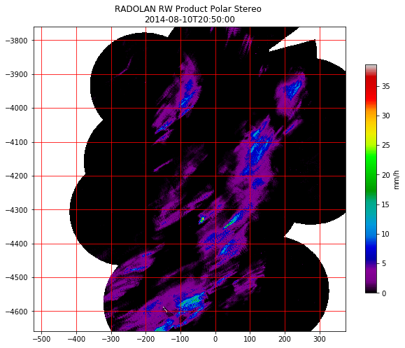

Simple Plot¶
This notebook shows loading of a RADOLAN RW Composit.
First it reads the data and metadata and prints the metadata.
In [2]:
# import section
import wradlib as wrl
import warnings
warnings.filterwarnings('ignore')
import numpy as np
import matplotlib.pyplot as pl
try:
get_ipython().magic("matplotlib inline")
except:
pl.ion()
# load radolan files
rw_filename = 'radolan/misc/raa01-rw_10000-1408102050-dwd---bin.gz'
rw_filename = wrl.util.get_wradlib_data_file(rw_filename)
rwdata, rwattrs = wrl.io.read_RADOLAN_composite(rw_filename)
# print the available attributes
print("RW Attributes:")
print("--------------")
for k, v in rwattrs.items():
print(k, v)
/home/travis/miniconda/envs/wradlib/lib/python2.7/site-packages/h5py/__init__.py:36: FutureWarning: Conversion of the second argument of issubdtype from `float` to `np.floating` is deprecated. In future, it will be treated as `np.float64 == np.dtype(float).type`.
from ._conv import register_converters as _register_converters
RW Attributes:
--------------
('maxrange', '150 km')
('producttype', 'RW')
('nrow', 900)
('intervalseconds', 3600)
('cluttermask', array([], dtype=int64))
('precision', 0.1)
('datetime', datetime.datetime(2014, 8, 10, 20, 50))
('ncol', 900)
('radolanversion', '2.13.1')
('radarlocations', ['boo', 'ros', 'emd', 'hnr', 'umd', 'pro', 'ess', 'asd', 'neu', 'nhb', 'oft', 'tur', 'isn', 'fbg', 'mem'])
('nodataflag', -9999)
('datasize', 1620000)
('radarid', '10000')
('secondary', array([ 799, 800, 801, ..., 806263, 806264, 807163]))
Then it plots the data in the RADOLAN Stereographic Projection
In [3]:
# mask invalid values
sec = rwattrs['secondary']
rwdata.flat[sec] = -9999
rwdata = np.ma.masked_equal(rwdata, -9999)
# get coordinates
radolan_grid_xy = wrl.georef.get_radolan_grid(900,900)
x = radolan_grid_xy[:,:,0]
y = radolan_grid_xy[:,:,1]
# create quick plot with colorbar and title
pl.figure(figsize=(10,8))
pl.pcolormesh(x, y, rwdata, cmap="spectral")
cb = pl.colorbar(shrink=0.75)
cb.set_label("mm/h")
pl.figaspect(1)
pl.title('RADOLAN RW Product Polar Stereo \n' + rwattrs['datetime'].isoformat())
pl.grid(color='r')
